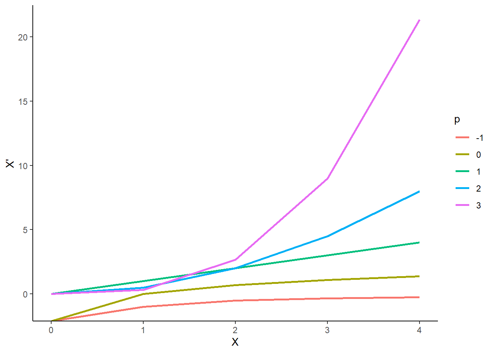
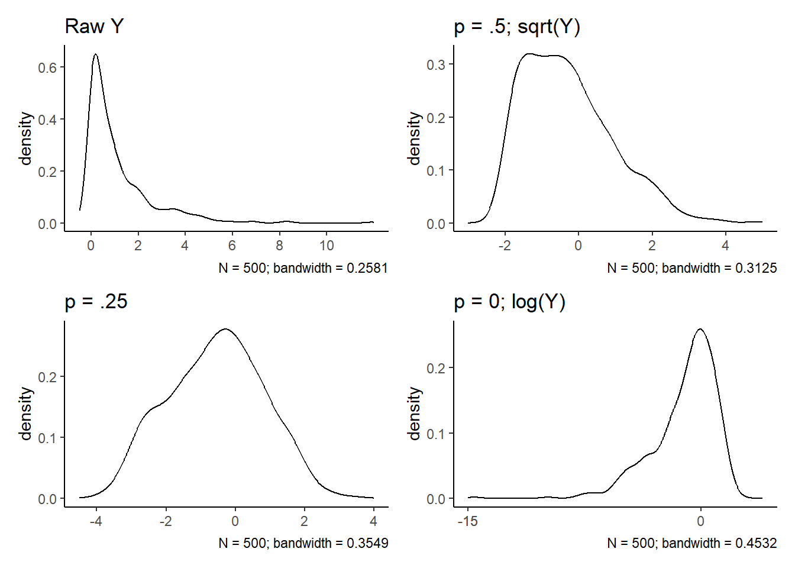

9 Dealing with Messy Data III: Transformations
9.1 Transformations: The Family of Power and Roots
The GLM makes strong assumptions about the structure of data, assumptions which often fail to hold in practice.
One solution is to abandon the GLM for more complicated models (generalized linear models; weighted least squares; robust regression).
Another solution is to transform the data (either the \(X\)s or \(Y\)) so that they conform more closely to the assumptions.
A particularly useful group of transformations is the family of powers and roots:
\(X\) → \(X^p\)
- If p is negative, then the transformation is an inverse power: \(X^{-1} = \frac{1}{X}\), and \(X^{−2} = \frac{1}{X^2}\)
- If p is a fraction, then the transformation represents a root: \(X^{\frac{1}{2}} = \sqrt{X}\), and \(X^{-\frac{1}{2}} = \frac{1}{\sqrt{X}}\)
The Box-Cox family of transformations provides a comparable but more convenient form (in some cases*).
\(X\) → \(X^{(p)} \equiv \frac{X^p- 1}{p}\)
Since \(X^{(p)}\) is a linear function of \(X^p\), the 2 transformations have the same essential effect on the data.
- Dividing by p preserves the direction of \(X\), which otherwise would be reversed when p is negative.
- This function also matches level and slope of curve at \(X=1\).
- Dividing by p preserves the direction of \(X\), which otherwise would be reversed when p is negative.
The power transformation \(X^{(0)}\) is useless, but the very useful log transformation is a kind of zeroth power:
lim \(p\) → \(0\) \(\frac{X^p - 1}{p} = \text{log}_eX\)
where \(e \approx 2.718\) is the base of the natural logarithms. Thus, we will take \(X^{(0)} \equiv log(X)\).
It is generally more convenient to use logs to the base 10 or base 2, which are more easily interpreted than logs to the base e.
Changing bases is equivalent to multiplying your variable by a constant. No effect on significance tests.
Descending the ladder of powers and roots from \(p = 1\) (i.e., no transformation) towards \(p = -2\) compresses the large values of X and spreads out the small ones.
Ascending the ladder of powers from \(p = 1\) towards \(p = 3\) has the opposite effect.
Power transformations are sensible only when all of the values of \(X\) are positive:
Some of the transformations, such as log (\(p= 0\)) and square root (\(p= .5\)), are undefined for negative or zero values of \(X\).
Power transformations are not monotone (i.e., they change to order of scores) when there are both positive and negative values among the data.
We can add a positive constant (called a start) to each data value to make all of the values positive:
\(X\) → \((X + s)^{(p)}\)
Power transformations are effective only when the ratio of the biggest data values to the smallest ones is sufficiently large; if this ratio is close to 1, then power transformations are nearly linear. For example:
Power transformations will work well if range of \(X = 1 – 100\).
Power transformations will have little effect if range of \(X = 1000 – 1100\)
Using a negative start can often increase the ratio of highest/lowest score.
Using reasonable starts, if necessary, an adequate power transformation can usually be found in the range \(−2 \le p \le 3\).
Power transformations of \(Y\) (or sometimes \(X\)) can correct problems with normality of errors.
Power transformations of \(Y\) (or sometimes \(X\)) can stabilize the variance of the errors.
Power transformations of \(X\) (or sometimes \(Y\)) can make many nonlinear relationships more nearly linear.
You can experiment with Box-Cox transformations of \(X\) or \(Y\) in R using
bcPower()in thecarpackage.In many fields, \(X^p\) rather than \(X^{(p)}\) may be preferred. Particularly, if \(p \ge 0\). This is simply done algebraically.
9.2 Transformations: Dealing with Skew
Transforming \(Y\) down the ladder can correct positive skew in the errors (most common problem).
Transforming \(Y\) up the ladder corrects negative skew in the errors.
Code
set.seed(102030)
y <- tibble(y_raw = rchisq(n=500, df=1),
y_.5 = car::bcPower(y_raw, .5),
y_.25 = car::bcPower(y_raw, .25),
y_0 = car::bcPower(y_raw, 0))
plot_raw <- y |>
ggplot(aes(x = y_raw)) +
geom_density() +
scale_x_continuous(limits = c(-.5, 12), breaks = c(0, 2, 4, 6, 8, 10)) +
labs(title = "Raw Y",
x = NULL,
caption = str_c("N = 500; bandwidth = ", round(density(y$y_raw)$bw, 4)))
plot_.5 <- y |>
ggplot(aes(x = y_.5)) +
geom_density() +
scale_x_continuous(limits = c(-3, 5), breaks = c(-2, 0, 2, 4)) +
labs(title = "p = .5; sqrt(Y)",
x = NULL,
caption = str_c("N = 500; bandwidth = ", round(density(y$y_.5)$bw, 4)))
plot_.25 <- y |>
ggplot(aes(x = y_.25)) +
geom_density() +
scale_x_continuous(limits = c(-4.5, 4), breaks = c(-4, -2, 0, 2, 4)) +
labs(title = "p = .25",
x = NULL,
caption = str_c("N = 500; bandwidth = ", round(density(y$y_.25)$bw, 4)))
plot_0 <- y |>
ggplot(aes(x = y_0)) +
geom_density() +
scale_x_continuous(limits = c(-15, 4), breaks = c(-15, -10. -5, 0)) +
labs(title = "p = 0; log(Y)",
x = NULL,
caption = str_c("N = 500; bandwidth = ", round(density(y$y_0)$bw, 4)))
(plot_raw + plot_.5) / (plot_.25 + plot_0)
9.3 Transformations: Dealing with Heteroscedasticity
Transforming \(Y\) down the ladder can correct problems with increasing spread of errors as \(Y\) increases (most common problem).
Transforming \(Y\) up the ladder corrects decreasing spread.
The problems of unequal spread and skewness commonly occur together and can be corrected together. Therefore, transforming \(Y\) down the ladder can correct both issues simultaneously.